第2章: 市場マイクロストラクチャーの基礎（Microstructure Foundations）#
- 元PDFページ: 24-41
- 書籍上のページ: 9-26
- 原文抽出テキスト:
raw_text/ch02_microstructure_foundations.txt
注意: これは日本語学習版です。章・節の日本語要約、重要概念、読み方を追加しています。本文の完全逐語訳ではありません。数式・図表・表はページ画像レンダーで視覚的に確認できるようにしています。原文抽出は Poppler
pdftotext -layoutに基づくため、数式記号は一部崩れる可能性があります。
この章の位置づけ#
高頻度データを生む市場制度の基礎を整理する章です。注文タイプ、市場構造、価格決定ルール、情報非対称性、在庫リスクといった後続章の前提を作ります。
重要概念#
成行注文, 指値注文, bid-ask spread, depth, price priority, time priority, 情報非対称性, 在庫リスク, limit order book
サブセクション別の日本語要約#
2.1 The Institutional Framework of Trading#
日本語見出し: 取引制度の枠組み
トレーダーの種類、注文形態、市場構造、注文優先順位、価格決定ルールを整理します。実証モデルの変数は取引制度に強く依存するため、この章はデータ理解の土台になります。
2.1.1 Types of Traders and Forms of Trading#
日本語見出し: トレーダーと取引形態
流動性供給者、流動性需要者、情報トレーダー、ノイズトレーダーなどの区別を置き、取引行動が約定・気配・注文到着にどう現れるかを説明します。
2.1.2 Types of Orders#
日本語見出し: 注文タイプ
成行注文、指値注文、キャンセル、注文修正などを整理します。約定だけでなく注文板イベントもモデル化対象になることが重要です。
2.1.3 Market Structures#
日本語見出し: 市場構造
quote-driven、市場駆動型、order-driven、brokered market などを比較します。市場構造により bid-ask spread、depth、quote update の意味が変わります。
2.1.4 Order Precedence and Pricing Rules#
日本語見出し: 注文優先順位と価格ルール
価格優先・時間優先などのルールが約定順序と価格形成を決めます。高頻度イベントの順序を解釈する前提です。
2.1.5 Trading Forms at Selected International Exchanges#
日本語見出し: 主要取引所の取引形態
NYSE、NASDAQ、XETRA、ASX などの制度差を確認し、同じデータ項目でも市場ごとに意味が異なることを示します。
2.2 A Review of Market Microstructure Theory#
日本語見出し: 市場マイクロストラクチャー理論のレビュー
情報非対称性モデル、在庫モデル、limit order book モデルを概観します。
2.2.1 Asymmetric Information Based Models#
日本語見出し: 情報非対称性モデル
情報を持つトレーダーの存在が spread、price impact、取引後価格変化を生むという考え方を説明します。
2.2.2 Inventory Models#
日本語見出し: 在庫モデル
マーケットメーカーが在庫リスクを管理するために quote を調整するという考え方を説明します。
2.2.3 Major Implications for Trading Variables#
日本語見出し: 取引変数への含意
spread、depth、trade size、price impact、order flow の関係を実証でどう見るかを整理します。
2.2.4 Models for Limit Order Book Markets#
日本語見出し: 指値注文板モデル
注文板市場における注文到着、キャンセル、約定、板の厚みをモデル化するための基礎を示します。
学習上の読み方#
- まずこの日本語要約で章の地図を把握する。
- 次にページ画像で数式・図表・表の形を確認する。
- 最後に原文抽出テキストで細部を読む。
- 数式記号が文字化けしている場合は、必ず直後のページ画像を参照する。
原文ページ別抽出とページ画像#
PDF page 24 / printed page 9#
Chapter 2
Microstructure Foundations
This chapter gives an overview of institutional and theoretical market microstructure
foundations. Section 2.1 introduces to the institutional framework of trading on
modern financial markets. We discuss different forms of trading, types of traders
as well as types of orders. Moreover, we present fundamental types of market
structures, most importantly quote-driven markets vs. order-driven markets, and
provide insights into common order precedence and pricing rules. In the last section,
market structures and trading rules on some selected international exchanges
are discussed. This section is understood as an overview of the most important
institutional aspects of financial market microstructures and mainly follows Harris
(2003).
Section 2.2 provides a compact overview on the fundamental strings of theoreti-
cal market microstructure literature. We review classical approaches of asymmetric
information based market microstructure theory, such as sequential trade models
and strategic trade models, as well as inventory-based approaches and models for
limit order markets. The purpose of this section is not to provide an in-depth
derivation and discussion of the individual models. Rather we compactly illustrate
the basic principles underlying the different approaches and review their major
predictions for market microstructure relationships and trading dynamics. Readers
interested in more details are referred, e.g., to Hasbrouck (2007).
2.1 The Institutional Framework of Trading
2.1.1 Types of Traders and Forms of Trading
Traders either trade on their own account, arrange trades for others or have others
arranging trades for them. Accordingly we distinguish between proprietary traders
trading on their own accounts and brokers arranging trades as agents for their clients.
This results either in proprietary trading or agency or brokerage trading. Dealers
N. Hautsch, Econometrics of Financial High-Frequency Data, 9
DOI 10.1007/978-3-642-21925-2 2, © Springer-Verlag Berlin Heidelberg 2012{kind=link}
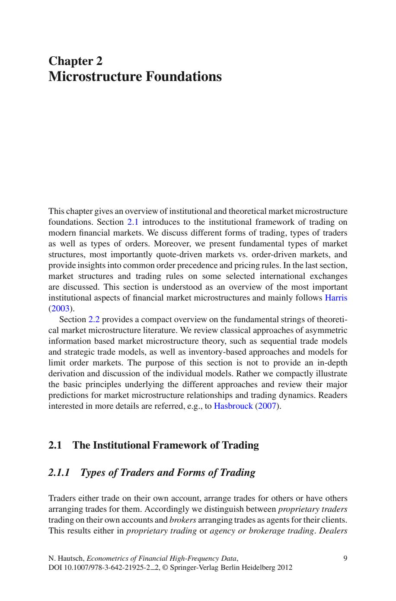
PDF page 25 / printed page 10#
10 2 Microstructure Foundations
are traders who stand ready to trade with other traders (or clients) when they want to
trade. Correspondingly, they serve as liquidity suppliers taking the opposite side of
the market if required. They operate as market makers, specialists or floor traders.
Often traders simultaneously serve as brokers and dealers and are known as broker-
dealers.
The buy side of a market is typically driven by investors (e.g., individuals,
funds, money managers, endowments), borrowers (e.g., individuals or companies),
hedgers (e.g., banks) or speculators. The market’s sell side consists of dealers
serving, (e.g., as market makers or floor traders), brokers (e.g., retail brokers or
institutional brokers), or broker-dealers representing well-known companies, like
Goldman Sachs or Merrill Lynch.
Exchanges are the platform where traders arrange their trades. On most
exchanges only member brokers are allowed to trade. Non-members can only
trade by instructing a member to trade for them. We distinguish between floor
trading, where traders meet on exchange floors to arrange trades and electronic
trading where traders trade via electronic systems. Order-driven systems are, most
generally, platforms where matches between buy and sell orders are arranged
according to certain trading rules. Here, trades can be processed via computers,
clerks or member brokers. For instance, classical floor-based oral auctions are
also order-driven systems where trades are arranged by personally exchanging
information. Conversely, in an order-driven computerized system, the order
matching is performed by a computer. Often, brokerages have their own (typically
order-driven) trading platforms to arrange trades for their clients. Important
examples are the electronic communication networks (ECNs), such as Island ECN
or Archipelago, which are electronic order-driven systems that are not regulated
as exchanges and are owned by brokerages and dealers. These trading platforms
are best-known as alternative trading systems and are competitors to regulated
exchanges. Finally, trades can be also arranged over the counter without involving
an exchange. An example is the corporate bond market, where most trading is
arranged over the counter.
2.1.2 Types of Orders
An order represents an instruction of a trader who cannot personally negotiate his
trades and therefore determines what to trade, when to trade and how much to trade.
A bid (offer) reflects a trader’s willingness to buy (sell) and contains the respective
price and quantity the trader will accept. Correspondingly, bid and ask (offer) prices
are the prices at which the trader is willing to trade. The highest (lowest) bid (ask)
price available is called best ask (bid) price or ask (bid) quote. A market quotation
gives the best bid and offer in a market and is called Best Bid and Offer (BBO). The
best bid and offer across consolidated markets for National Market System (NMS)
stocks is called the National Best Bid and Offer (NBBO). The difference between
the best ask and best bid is called the bid-ask spread.{kind=link}
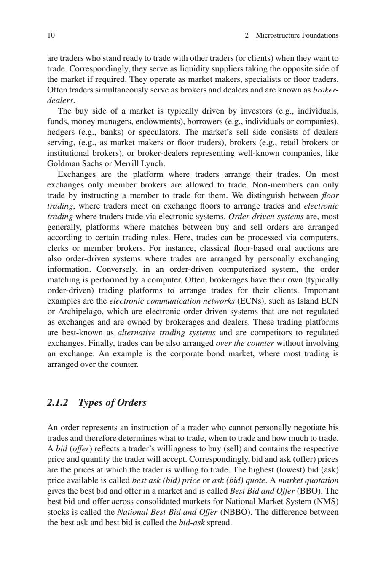
PDF page 26 / printed page 11#
2.1 The Institutional Framework of Trading 11
A market order is an order that trades immediately at the best price currently
available in the market. The corresponding price at which an order is executed is
called transaction price. Market order traders “pay” the bid-ask spread as long as
the order is filled with the offered quantity at the best ask or bid price. If the size of
the market order is larger than the quantity offered at the best ask or bid, the trader
must move prices and thus has to pay an extra premium (“price concession”). Then,
buyers (sellers) have to bid prices up (down) in order to find a counter-party who is
willing to take the other side a large trade. The resulting price movements are called
(instantaneous) market impact or price impact and naturally increase with the order
size and are the dominant part of the trading costs (on top of the bid-ask spread).
These trading costs induced by a potential market impact and the execution price
uncertainty are often referred to as the price traders have to pay to obtain priority
in the market, i.e., the “price of immediacy”. In some markets traders can negotiate
prices and receive prices which are better than the currently available best ask and
bid. In this case, the trader receives price improvement due to a counter-party who
is willing to step in front of the currently best quote.
A limit order is a trade instruction to trade at a price which is no worse than
the so-called limit price specified by the trader. As the corresponding limit price is
not necessarily offered on the other side of the market, a limit order faces execution
risk. If no one is willing to take the opposite side at the required limit price, the order
is not executed and is placed in the limit order book where all non-executed limit
orders are queued according to price and time priority. Correspondingly, the larger
the distance between the limit order and the best quote, the worse is the order’s
position in the queue and the lower is its execution probability in given time. Hence,
in order to increase the execution probability and to reduce the time until execution,
the limit order trader has to bid more aggressively with a limit price closer to the
market. Limit orders at the best bid or offer are called at the market. Accordingly,
limit orders with prices worse (better) than the current best quotes are called behind
(in) the market. A limit order with a limit price at or above (below) the best ask
(bid) price in case of a buy (sell) order is executed immediately and, if necessary,
filled until the limit price level is reached. Such an order is called a marketable limit
order corresponding to a market order where the trader limits the potential price
impact (by correspondingly setting the limit price). If the limit price is worse than
the current best price, the order has to “walk up (down)” the book in case of a buy
(sell) order. Finally, a market-to-limit order is a market order, which is executed at
the best ask/bid quote in the order book. Any unfilled part of a market-to-limit order
automatically enters the order book.
Besides the risk of execution uncertainty, limit order traders face adverse
selection risk corresponding to the risk that the order is executed (“picked up”) and
then the markets moves against their new position causing a loss. This happens,
for instance, if the market moves downwards, picks up a standing buy (bid)
limit order and continues declining. Adverse selection risk can only be reduced
by posting far away from the market which, however, increases the execution
uncertainty.{kind=link}
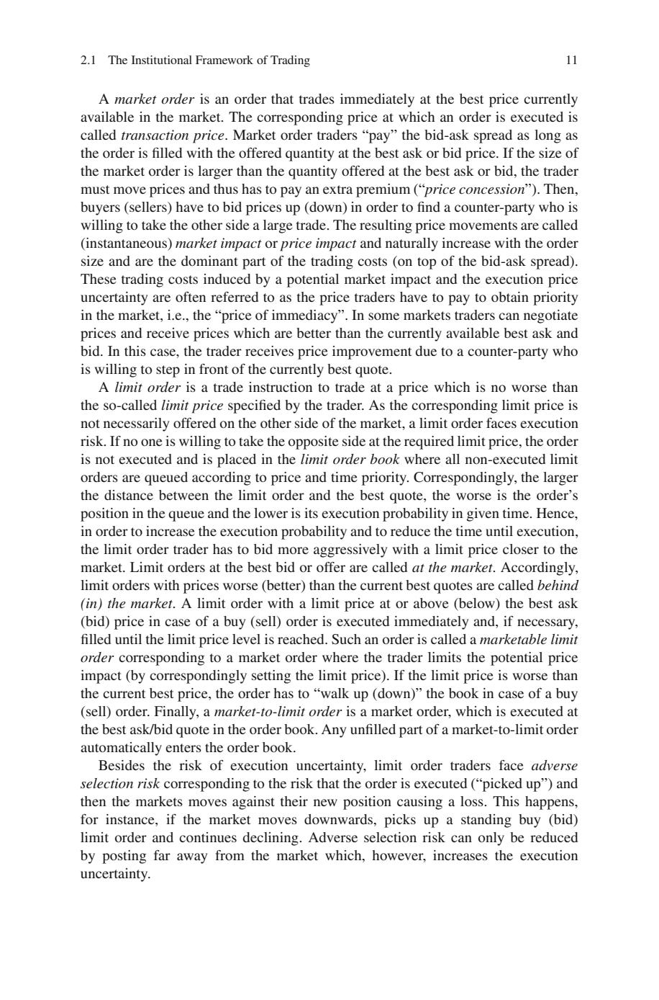
PDF page 27 / printed page 12#
12 2 Microstructure Foundations
A stop order is an order which automatically buys (sells) a given quantity after
the price rises (falls) to the “stop price”. In case of a sell, the stop order prevents
further losses in case of further falling prices and thus is called stop loss order.
Hence, in contrast to a limit order, a stop order is activated as soon as the price
passes the specified stop price. In contrast, a limit order is only executed as long as
the price is better than the corresponding limit price. Combinations of both trade
instructions result in a stop limit order with the stop price determining when the
limit order becomes active and the limit price indicating the limit until which the
order is executed.
A so-called market-if-touched order is a market order which becomes only valid
if the price reaches a certain touch price. While stop orders buy (sell) after the
price rises (falls) to the stop price, a corresponding market-if-touched order sells
(buys) after the price falls (rises) to the touch price. While loss orders enforce price
movements by trading in line with the market trend and thus generate momentum,
market-if-touched orders do exactly the opposite. They buy when prices drop and
sell when prices rise and thus generate contrarian trading patterns.
Limit orders are typically combined with specific attributes specifying for
instance, for how long an order is valid and under which conditions it might
be canceled. Examples are fill-or-kill order whose portions that cannot filled
immediately are canceled or all-or-none orders which are only executed if they can
be filled at once. For other types of orders, see, e.g., Harris (2003).
Finally, on a growing number of markets, orders can be partly or even completely
hidden. A common type of order is the so-called iceberg order (or reserve order)
where a certain proportion of the order can be non-displayed and thus is non-visible
for other market participants. Such orders are used to hide trading strategies and to
reduce adverse selection risk. The minimum display size is fixed by trading rules
and differs across exchanges. Some markets, such as the NASDAQ allow to post
hidden orders, where the order is entirely hidden. As shown by Hautsch and Huang
(2011) based on NASDAQ data, the possibility to post completely hidden orders in
the spread, might create substantial market activity as traders “search” for hidden
volume by submitting “fleeting limit orders” to test for potential execution.
2.1.3 Market Structures
The market structure determines who can trade, what can be traded, when can be
traded, and how it can be traded. We generally distinguish between continuous
trading, where traders can trade whenever the market is open and call markets where
all traders trade simultaneously in a call auction when the market is called. Call
markets are often used to open a trading session and to settle the price before the
market switches to continuous trading. Likewise they are also used to end a trading
session, to have a mid-day call auction interrupting continuous trading or to re-start
it after a trading halt. In some markets, call markets are also used to trade less liquid
assets.{kind=link}
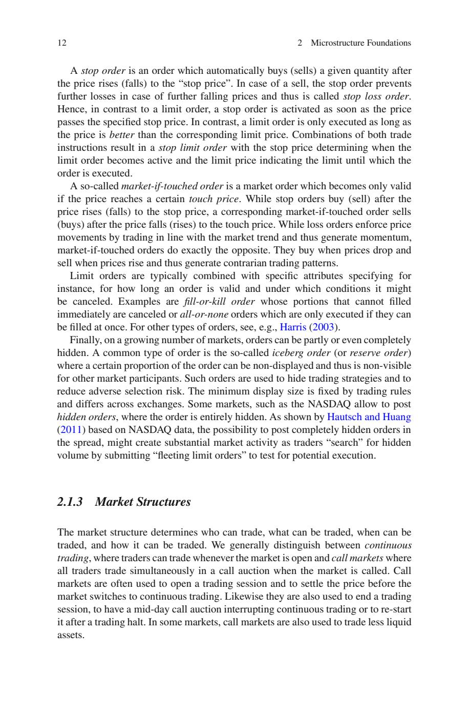
PDF page 28 / printed page 13#
2.1 The Institutional Framework of Trading 13
The most important characteristic of a market is the form of its execution system.
We distinguish between the three major types of execution systems leading to quote-
driven dealer markets, order-driven markets and brokered markets.
2.1.3.1 Quote-Driven Dealer Markets
In a quote-driven market (dealer market), trades are only executed by dealers. The
dealers quote the ask and bid prices and supply liquidity by standing ready on
the opposite side of the market. They often trade among themselves. In a pure
quote-driven market, traders (or brokers acting on behalf of traders) cannot trade
themselves (even if they have matching positions) but must execute their trades by
dealers which earn the bid-ask spread. In some (though not pure) dealer markets,
however, traders can trade directly without interacting with a dealer. A prominent
example is the NASDAQ Stock Market as described in Sect. 2.1.5.2.
Dealers are often specialized in serving specific clients which are trustworthy and
creditworthy and tend to refuse trading with counter-parties outside their clientele or
which might be better informed. Traders who do not have credit relationships with
dealers have to trade via brokers stepping in and guaranteeing credit worthiness.
Interdealer brokers are brokers arranging trades among dealers if dealers prefer
keeping anonymity and not informing their rivals about their quotes.
Quote-driven dealer markets are popular forms of trading for bonds, currencies
and stocks. Examples are the NASDAQ Stock Market or the London Stock
Exchange.
2.1.3.2 Order-Driven Markets
In an order-driven market, traders trade directly with each other. As there are no
dealers serving as intermediaries, trading occurs according to specific trading rules.
Order precedence rules determine which buyers trade with which sellers and trade
pricing rules determine the resulting transaction prices. Liquidity provision in an
order-driven market is ensured by traders taking the opposite side of the market or
by dealers serving as traders. In some order-driven markets, most of the liquidity is
still provided by dealers. However, a main characteristic of an order-driven market
is that dealers cannot choose their clients but have to trade with anyone accepting
the offer.
Order-driven markets are mostly auction markets. An auction is a formalized
process, the so-called price discovery process by which buyers seek the lowest
available prices and sellers seek the highest available prices. In a single-price
auction all trades at the same price following a call are simultaneously arranged.
Conversely, in continuous two-sided auctions, traders continuously arrange their
trades on both sides of the market based on prices varying over time. In markets
with oral auctions traders trade face-to-face on a trading floor. As they negotiate
their trades by crying out their bids and offers these markets are called open outcry{kind=link}
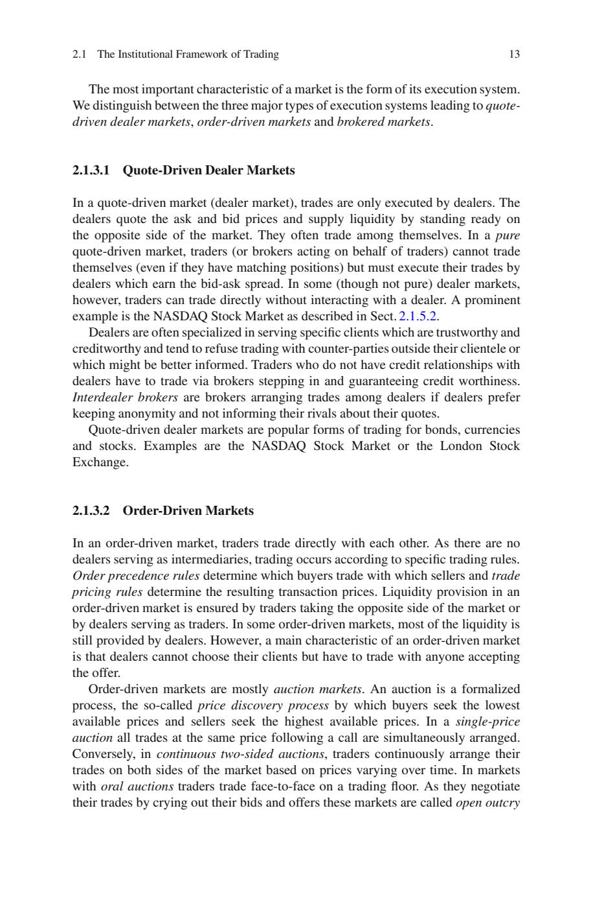
PDF page 29 / printed page 14#
14 2 Microstructure Foundations
markets. Order-driven markets which use an electronic execution system employ
rule-based order matching.
Only order-driven markets which are not organized as auctions are crossing
networks where trading takes place at prices which are determined on other markets.
These prices are called crossing prices. Crossing networks are call markets where
submitted orders are matched according to order precedence rules. Such market
structures are sometimes used to organize after-hours trading based on closing prices
from continuous trading (e.g., at the New York Stock Exchange). Alternatively, they
are used to organize intraday calls where the crossing prices correspond to a price
in a continuous market at a random time within a certain time interval following the
call.
As in an order-driven market, in contrast to quote-driven dealer markets, trades
are arranged according to precedence rules and traders cannot choose with whom
they trade, traders typically trade with counter-parties with whom they do not
have credit relationships. To ensure proper order settlement, these markets require
elaborate clearing mechanisms.
2.1.3.3 Brokered Markets
In brokered markets, brokers initiate the matches between buyers and sellers. The
broker’s role is to find liquidity provided by a counter-party. We distinguish between
concealed traders and latent traders. Concealed traders are traders who intend
to trade but do not make public offers to hide their strategies. However, they
trade if brokers offer them suitable matches. A latent trader has no concrete trade
intention but only trades if she is confronted with an attractive trading opportunity.
Successful brokers in a brokered market have to find both concealed traders and
latent traders.
2.1.4 Order Precedence and Pricing Rules
The order precedence rules in an oral auction are price priority and time precedence.
According to the price priority rule, traders who offer the most competitive prices
have priority. Traders are not allowed to accept bids and offers at inferior prices.
The time precedence rule gives priority to traders whose quotes first improve the
prevailing best ask and bid prices. Time precedence is retained as long as the quotes
are maintained or accepted by the counter-party. In oral auctions, according to
traders “a quote is good only as long as the breath is warm” requiring to repeating
offers to maintain precedence. However, time precedence is only helpful as long as
the minimum price increment, the so-called minimum tick size, is not too small.
Otherwise, time precedence gives only little privilege as competitors can easily
improve the best quotes. In oral auctions, price priority is self-fulfilling as traders
try to trade to best possible prices which encourages seeking for the best offer. This,{kind=link}
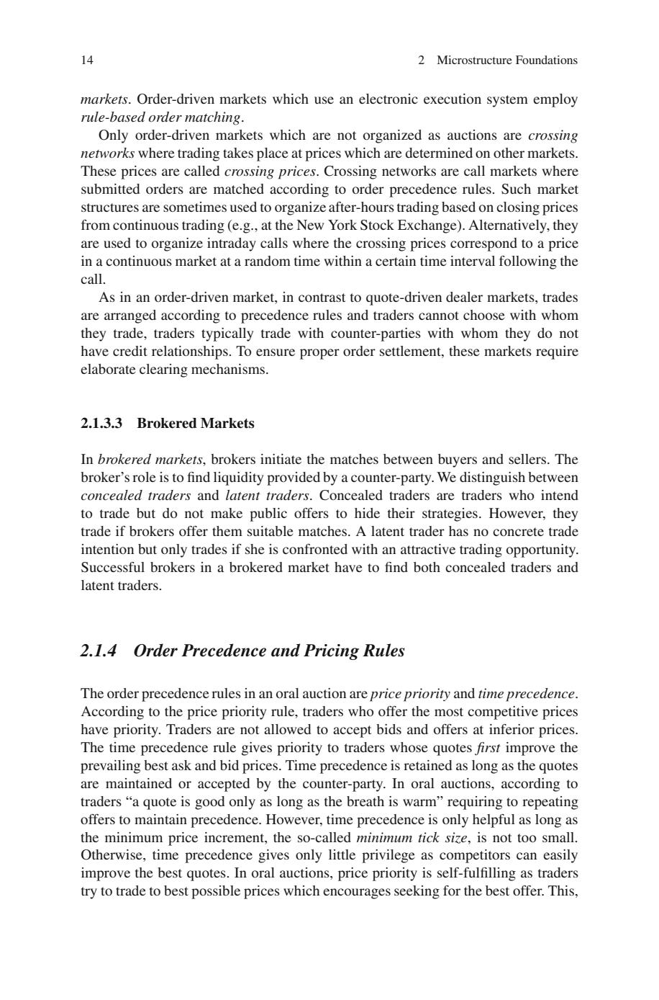
PDF page 30 / printed page 15#
2.1 The Institutional Framework of Trading 15
however, is not guaranteed for time precedence as for traders it makes no difference
with whom to trade as long as quotes are equal.
Most exchanges and electronic trading platforms use rule-based order-matching
systems. Here, trading is typically anonymous, decentralized and traders trade by
electronically submitting, canceling or amending (already existing) orders. Order
matching is arranged by a typically automatized system using a sequence of
procedures. All systems use price priority as primary order precedence rule. As
second order precedence rule, mostly time precedence is used. Some markets use
display precedence giving priority to displayed orders over undisclosed orders or
size precedence where orders with either large or small sizes are privileged. Pro
rata matching yields an allocation where each order is filled in proportion to its
size.
In single-price auctions, the market ranks the orders and starts by matching the
highest-ranking buy and sell orders to each other. This match results in a trade as
long as the buyer pays at least as much as the seller demands. If the two orders have
the same size, both will execute completely. Otherwise, the unfilled part of an order
will be matched with the next highest-ranking orders. This process continues until
all possible trades are matched. The price of the last possible match is the market-
clearing price. In a single price auction, all trades take place at the market clearing
price.
The market-clearing price of a single price auction corresponds to the price where
the supply schedule equals the demand schedule. The supply schedule lists the
total offered volume according to price priority and thus is a non-decreasing curve.
Likewise, the demand schedule lists the total sell volume and is a non-increasing
curve. Correspondingly, at prices below the clearing price there is excess demand
in the market while there is excess supply for prices above the clearing price. By
choosing the market-clearing price to match all orders, a maximum amount of
possible volume is traded. Moreover, it is easily shown that traders’ overall benefits
from participating in this auction are maximized.
If the buy order in the last feasible trade bids at a higher price than the sell
order, the resulting market-clearing price can be either of these two prices or can
be between them. In this case, the market-clearing price does not provide an exact
match and some excess demand or supply might be left. In case of excess supply
(demand), all buyers (sellers) at the market-clearing price fill their orders, while the
secondary precedence rules determines which sell (buy) orders to be filled.
The pricing rule in an oral auction and in a continuous rule-based order matching
system is called discriminatory pricing rule. According to this rule, every trade takes
place at the price proposed by the trader whose ask or bid is accepted. Consequently,
the entire offer or bid side of the market is matched in a discriminatory fashion
with progressively inferior prices. This is similar to the way how a large order is
simultaneously matched with all trades pending on the opposite side yielding best
prices for the first piece and progressively inferior prices for the other pieces as the
order walks up or down the ask or bid schedule and exhausts liquidity.
In continuous auction markets, this process is maintained by an order book
which is automatically updated whenever a new order arrives. New orders enter the{kind=link}
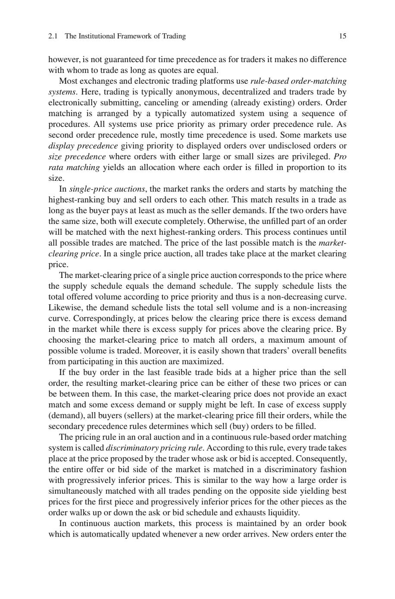
PDF page 31 / printed page 16#
16 2 Microstructure Foundations
book according to order precedence rules. If they are marketable, they are matched
against the standing orders. Then, under discriminatory pricing, the limit price of
any standing order determines the price for each match. Accordingly, large orders
trade their individually matched parts at different prices as they walk up or down
the book. In contrast, under uniform pricing, the individual orders trade at the
same price corresponding to the worst price under discriminatory pricing. Hence,
large impatient traders prefer discriminatory pricing while liquidity suppliers prefer
uniform pricing.
Finally, refined and modified rules are applied to special type of orders. For
instance, in order-driven markets allowing for hidden orders, special rules regulate
order precedence for displayed and non-displayed parts of an order. A common
rule is that, for a given limit price, visible order volume has priority over non-
visible volume (even if the non-displayed volume has been posted before). For more
specific details, see the trading rules, e.g., on NASDAQ.
2.1.5 Trading Forms at Selected International Exchanges
In this section, we illustrate the current trading forms at some selected international
exchanges. We concentrate on those exchanges where most of the data used in the
remainder of the book come from. These are the two most important exchanges
in the U.S., the New York Stock Exchange (NYSE) and NASDAQ as well as
the electronic trading systems of the Frankfurt stock exchange (XETRA) and the
Australian Stock Exchange (ASX) as representatives of typical electronic limit order
book markets commonly used for equities.
2.1.5.1 The New York Stock Exchange (NYSE)
Trading at the NYSE is based on a hybrid system, i.e., the trading mechanism com-
bines elements from quote-driven, order-driven and brokered markets. Essentially,
it is an order-driven market, however, there are still specialists who have to provide
liquidity. In fact, NYSE trading combines an open outcry system, a dealer market
and an electronic limit order book.
The NYSE started in 1792 as an order-driven open outcry floor market and was
historically the dominant trading platform for U.S. equities. Later, components of
a dealer market have been integrated in the open outcry system. As a result, for
each stock, one market maker (specialist) has to manage the trading and quote
process and has to guarantee the provision of liquidity, when necessary, by taking
the other side of the market. The specialist also has to maintain the underlying limit
order book. Besides from orders posted by the specialist, the limit order book also
receives orders directly from the exchange’s routing system. These are orders which
do not require to be handled by a broker and are sent directly to the specialists’s
workstation. The specialist sets bid and ask quotes representing his own interest,{kind=link}
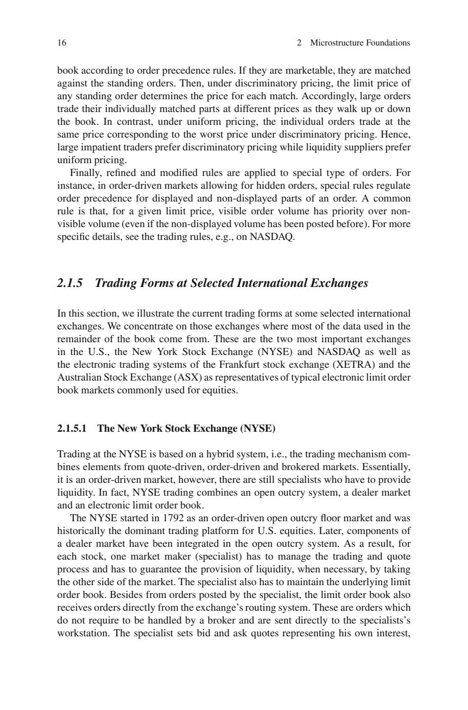
PDF page 32 / printed page 17#
2.1 The Institutional Framework of Trading 17
those of a floor broker or the best ask and bid implied by the limit order book. In
his function to serve as an agent for the book, she is considered as a single floor
trader. According to present rules, the specialist must display limit orders (from the
book) that are better than the prevailing ones within 30 s. Hence, during short time
spans, orders from the book might not have price priority over prices offered by
floor brokers. Moreover, the book might not have time priority over floor traders.
The dealer market starts with a single-price call auction as opening procedure.
Regular trading at the NYSE starts at 9:30 and ends at 16:00. The closing
procedure has some similarities to an auction and requires the specialist to balance
supply and demand and to establish a (preferably smooth) transition path to the
closing prices. Accordingly, trading “at the close” is governed by relatively complex
rules.
While in the (open outcry) dealer market trades are only executed by the
specialists, NYSE offers also automatic (electronic) execution. The NYSE Direct+
system, which was introduced in 2000, is an electronic trading system which runs
parallel to the dealer market. Induced by the rising competition with ECNs, the
NYSE established several mergers. One important merger was the merger between
the NYSE and the ECN “Archipelago” yielding “NYSE Arca”.
2.1.5.2 NASDAQ
The name NASDAQ is an acronym for “National Association of Securities Dealers
Automated Quotations” and was founded in 1971 by the National Association of
Securities Dealers (NASD). Historically, it was primarily organized as a dealer
market linking geographically non-centralized dealers via an electronic system.
In the early 1990s NASDAQ gave little protection to customer limit orders. For
instance, competitive customer quotes were not necessarily immediately displayed
but were used by the dealers to trade on their own account. Such a proceeding
was prohibited by the so-called “Manning Rules” adopted in 1994/1995. In 1994,
the SEC started investigations on coordinated quote setting behavior of NASDAQ
dealers resulting in unnecessarily discrete price grids and large spreads. These
investigations resulted in civil lawsuits against NASDAQ dealers and more explicit
order execution rules set by the SEC (which were not only limited to NASDAQ).
The two most important components of these rules are the “display rule” requiring
the display of customer orders with prices better than the currently prevailing quotes
and the “quote rule” requiring a market maker to make publicly available any
(potentially superior) prices that she quotes in inter-dealer markets. As a result of
these reforms, NASDAQ spreads declined significantly.
Subsequently, NASDAQ established an electronic system (“SuperMontage”)
which organizes trade execution, reporting, confirmation, and interdealer communi-
cation. The underlying principles resemble mostly those of an electronic limit order
book, which, however, is maintained only by the dealers and not by the customers.
NASDAQ’s position further increased by numerous alliances and take-overs. For
instance, NASDAQ purchased the American Stock Exchange (AMEX) in 2003, the{kind=link}
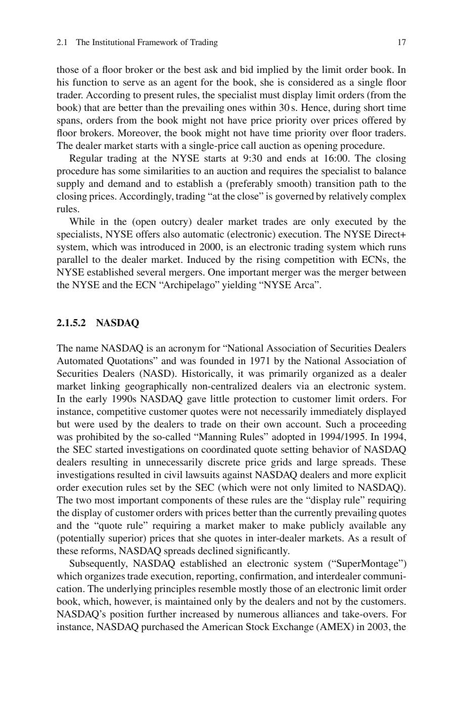
PDF page 33 / printed page 18#
18 2 Microstructure Foundations
ECN’s INET (formerly Island/Instinet) and Brut in 2004/2005 and the Philadelphia
Stock Exchange in 2007. As a result, NASDQA is currently the biggest electronic
stock market in the U.S.
2.1.5.3 XETRA
The German Exchange Electronic Trading (XETRA) is the electronic trading
system of the Deutsche Börse AG for cash market trading in equities and a variety of
other instruments including Exchange Traded Funds, mutual funds, bonds, warrants,
certificates, among others. It has been introduced in November 1997 as an electronic
supplement of the classical floor trading at the Frankfurter Wertpapierbrse. XETRA
is a double continuous auction system with an opening and closing call auction at the
beginning and at the end of the trading day, respectively, and a mid-day call auction.
During the normal trading period, trading is based on an automatic order matching
procedure. Limit orders enter the queues of the order book according to strict price-
time priority. Auctions consider all order sizes for price determination, whereas
continuous trading is based upon round lots only. XETRA trading is completely
anonymous and does not reveal the identity of the traders. A trader can act as agent
trader or as proprietary trader. Some traders might act as market makers on behalf of
XETRA and are obliged to guarantee liquidity on both sides of the market as well
as to adjust supply and demand imbalances. Normal trading currently takes place
from 09:00 to 17:00.
2.1.5.4 Australian Stock Exchange
The Australian Stock Exchange (ASX) is a continuous double auction electronic
market and as such is an example for an electronic limit order book trading system
similar to those operating, for instance, in Paris, Hong Kong and Sao Paulo. The
continuous auction trading period is preceded and followed by an opening call
auction. Normal trading takes place continuously between 10:09 and 16:00 Sydney
time on Monday to Friday. Limit orders are placed in the buy and sell queues
according to a strict time-price priority order. Any buy (sell) order entered that has
a price that is greater (less) than existing queued sell (buy) orders, will be executed
immediately. The order will be automatically matched to the extent of the volume
that is available at the specified limit price. All orders and trades are always visible
to the public. Order prices are always visible, however orders may be entered with an
undisclosed (hidden) volume if the total value of the order exceeds AUD 200,000.
The identity of the broker who entered an order is not public information, but is
available to all other brokers. A comprehensive description of the trading rules of
the Stock Exchange Automated Trading System (SEATS) on the ASX can be found
in the SEATS Reference Manual available at www.asxonline.com.{kind=link}
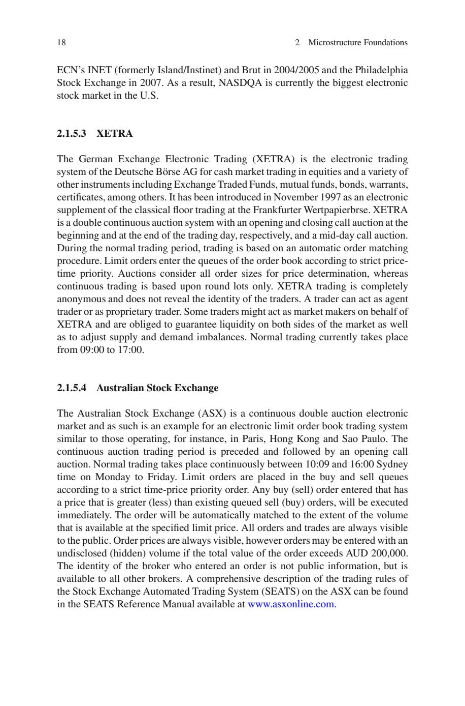
PDF page 34 / printed page 19#
2.2 A Review of Market Microstructure Theory 19
2.2 A Review of Market Microstructure Theory
In this section, we give a compact overview of the fundamental approaches and
directions in theoretical market microstructure literature. More in-depth treatments
of this material are given, for example, by O’Hara (1995), the surveys by Madhavan
(2000) and Biais et al. (2005) or the monograph by Hasbrouck (2007).
As stated by Madhavan (2000), market microstructure theory is concerned with
“the process by which investors’ latent demands are ultimately translated into prices
and volumes.” Consequently, central topics in market microstructure theory deal
with price formation, price discovery, inventory, liquidity, transaction costs as well
as information diffusion and dissemination in markets. Traditional microstructure
theory provides two major directions to explain price setting behavior: asymmetric
information based models and inventory models. The former branch models market
dynamics and adjustment processes of prices using insights from the theory of
asymmetric information and adverse selection. As discussed in Sect. 2.2.1, two main
approaches are sequential trade models and strategic trade models. The branch of
inventory models, as discussed in Sect. 2.2.2, investigates the uncertainty in order
flow and the inventory risk and optimization problem of liquidity suppliers under
possible risk aversion. We summarize the major theoretical implications of the
individual approaches in Sect. 2.2.3. Finally, more recent work addresses trading
behavior and equilibria on limit order book markets. We briefly review this literature
in Sect. 2.2.4.
2.2.1 Asymmetric Information Based Models
2.2.1.1 Sequential Trade Models
In sequential trade models, randomly selected traders sequentially arrive at the
market. The framework is based on the assumption of the existence of differently
informed traders. Accordingly, there are so-called “informed traders”, who trade
due to private information on the fundamental value of the asset and “liquidity
traders”, who trade due to exogenous reasons, like portfolio adjustments or liquidity
aspects. The assumption of heterogeneous groups of traders provides the basis for a
plethora of asymmetric information based models. Seminal papers in this direction
are Copeland and Galai (1983) and Glosten and Milgrom (1985).
In the Glosten and Milgrom (1985) model, securities have a payoff which is
either high or low with given probability and is revealed after market closure. The
population of traders consist of informed traders knowing the true asset payoff
and uninformed traders who buy or sell randomly with equal probability. Informed
traders buy (sell) if the true asset value is high (low). The proportion of informed
traders in the market is given. Dealers are uninformed and infer on the asset’s true
value based on the trade history. In particular, observing a buy (sell) request of a{kind=link}
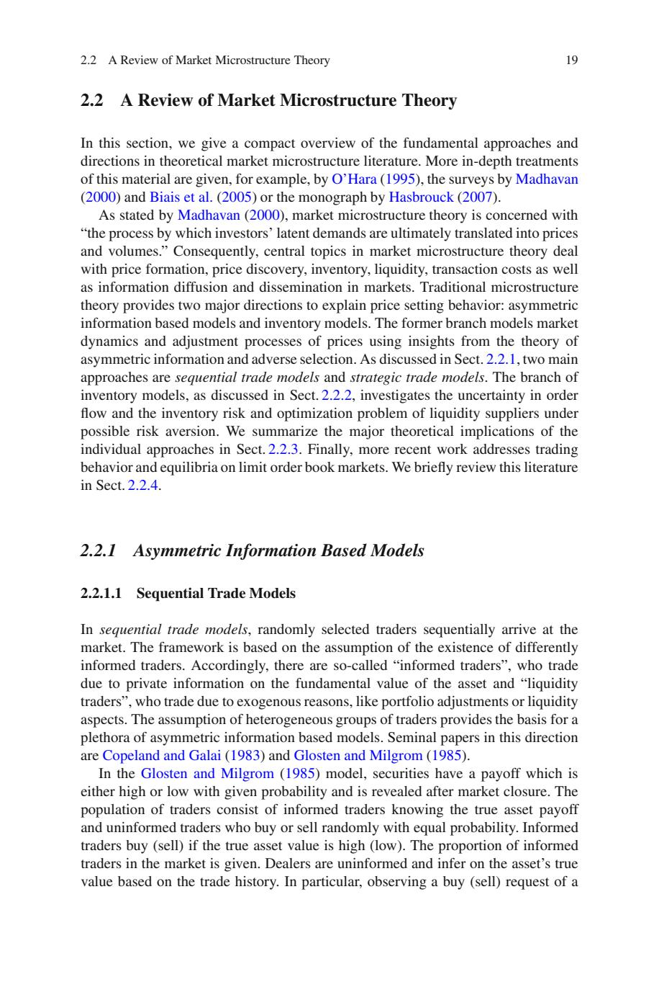
PDF page 35 / printed page 20#
20 2 Microstructure Foundations
trader, the dealer computes the conditionally expected value of the asset given a
trade is a buy or sell. Then, she sets the ask (bid) quote such that the expected
gain from an uninformed buyer (seller) are balanced by the loss to an informed
buyer (seller). After the next trade, the dealer updates her beliefs on the asset’s true
value using her initial beliefs as priors. This results into updating recursions on the
probabilities for the asset’s true values. The resulting bid-ask spread is a function of
the asset’s potential values (high vs. low), their corresponding probabilities, and the
relative proportion of informed traders. Fundamental implications of this sequential
trade model is that trade prices follow a martingale, order flow is correlated (buys
tend to follow buys, sells tend to follow sells), bid-ask spreads decline over time as
the dealer’s uncertainty is reduced and individual trades have price impact.
The Glosten and Milgrom (1985) model has been extended and modified in
various directions. Easley and O‘Hara (1992) allow for event uncertainty by
assuming the random occurrence of a trade event at the beginning of each day.
In case of no information event, informed traders refrain from trading and only
uninformed traders (randomly) trade in the market. Easley and O‘Hara (1992)
assume that uninformed traders do not necessarily always buy or sell but can also
refrain from trading. Consequently, also the occurrence of no trade (i.e., a slow-
down of the trading process) carries information. Therefore, besides bid-ask spreads
also the time between trades is informative. Variations of this framework are Easley
and O’Hara (1987) where different order sizes are possible and Easley and O‘Hara
(1991) allowing for different types of orders.
Easley et al. (1997) and Easley et al. (2002) extend the framework of Easley and
O‘Hara (1992) to allow for Poisson arrival of the events determining the asset’s
true value. Then, traders do not sequentially arrive in discrete time but arrive
randomly in continuous time. This arrival process is governed by further Poisson
processes with different intensities for informed and uninformed traders. As a result,
the numbers of daily buys and sells are jointly distributed based on a mixture of
Poisson distributions. Then, based on the information arrival intensity as well as the
arrival intensities for informed and uninformed traders, the probability of informed
trading (PIN), i.e., the probability that a randomly chosen trader is informed, can be
computed. Easley et al. (2008) extend this approach to a dynamic framework and
estimate time-varying PINs.
2.2.1.2 Strategic Trade Models
In a sequential trade model, a trader participates in a market only once. Therefore,
she does not take into account the impact of her trade decision on the subsequent
behavior of others. As a consequence, informed traders trade largest possible
quantities as they do not have to account for possible adverse price effects in future
trades. This situation is completely different in a strategic trade model, where a
trader repeatedly participates in the market and therefore has to behave strategically.
A seminal paper in this area is Kyle (1985). In the Kyle model, the security’s value is
stochastic but is known by an informed trader. Uninformed traders (“noise traders”){kind=link}
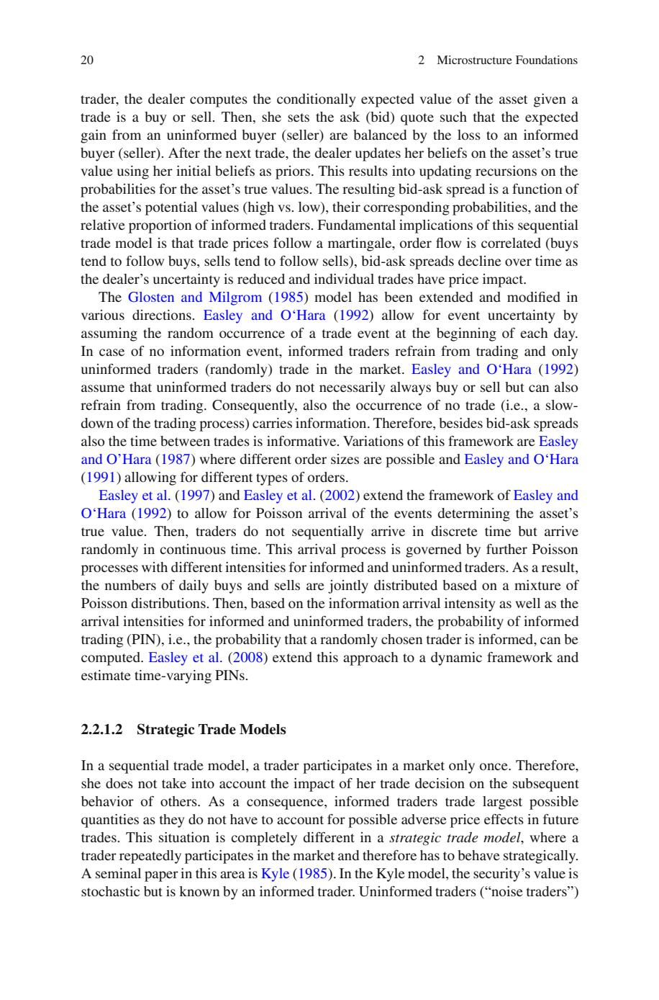
PDF page 36 / printed page 21#
2.2 A Review of Market Microstructure Theory 21
trade independently of the asset’s true value and submit a stochastic order flow. The
market maker receives the demand of both the uninformed and informed traders and
has to set a price such that all trades are cleared. However, as the informed trader
might trade aggressively, the market maker has to protect herself against being on
the wrong side of the market by setting the price as a linearly increasing function of
the net order flow (i.e., the total net volume requested by informed and uninformed
traders). This, however is anticipated by the informed trader who computes her
profits given her conjecture on the market maker’s price setting rule and her demand.
Note that in contrast to a sequential trade model, the informed trader’s profit is not
necessarily positive as a high demand from liquidity traders might drive up the price
set by the market maker. The informed trader’s optimization problem is to choose
her demand such that her expected profit is maximized. This yields a linear demand
function in the asset’s true value.
When the market maker conjectures the informed trader’s underlying optimiza-
tion problem, she can compute the trader’s linear demand function in dependence
of the parameters of her own price setting rule. This yields an inverse relationship
between the slopes of the trader’s demand and the market maker’s price setting rule.
The slope of the market maker’s price setting rule determines the price impact of
net order flow and is commonly referred to as “Kyle’s lambda”.
Kyle (1985) makes this quantity operational by exploiting properties of bivariate
normal random variables. In such a framework, it can be computed as a function
of the covariance between the total asset demand and the true value of the asset
as well as the variance of noise trading. An implication of the Kyle model is that
the informed trader’s expected profit is increasing in the divergence between the
asset’s true value and the market maker’s unconditional price (irrespective of the
order flow) and in the variance of noise trading. The latter effect is interesting as it
implies that the informed trader’s profit is higher when there is more liquidity in the
market.
Kyle’s model has been extended in various directions. For instance, Admati and
Pfleiderer (1988) and Foster and Viswanathan (1990) allow for uninformed traders
who behave strategically themselves. Foster and Viswanathan (1996), among others,
allow for multi-period models.
2.2.2 Inventory Models
Inventory models consider the inventory problem of a dealer who is facing buyers
and sellers arriving asynchronously. This string of the literature originates from
Garman (1976) who models the arrival processes of buyers and sellers as Poisson
processes. The arrival intensities depend on the price they pay or receive, respec-
tively. Hence, as long as the intensities are equal, the dealer is on average buying
and selling at the same rate. The dealer makes profits by setting a spread. Then, the
larger is the bid-ask spread, the higher are the profits per trade but the lower is the
trade arrival rate. Garman (1976) characterizes the inventory problem of the market{kind=link}
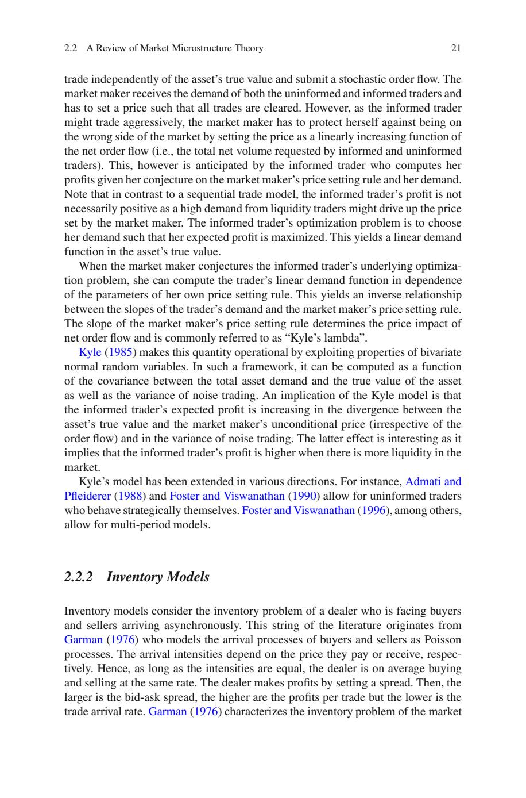
PDF page 37 / printed page 22#
22 2 Microstructure Foundations
maker who has to ensure that her holdings of the security and cash do not drop below
a given level. If ask and bid quotes are set such that the resulting arrival intensities
of buyers and sellers are equal, holding of stock follow a zero-drift random walk
while cash holding follow a positive-drift random walk (as long as the spread is
strictly positive). This causes the market maker to go bankrupt with probability
one as a zero-drift random walk hits any finite level with probability one. Hence,
as long as the market maker keeps ask and bid quotes constant, she must expect
to be ruined within short time. Amihud and Mendelson (1980) present a similar
framework where the market maker’s inventory is constrained to lie between upper
and lower bounds. They show that the market maker updates her quotes whenever
the inventory approaches these boundaries to drive up or down, respectively, the
arrival rates of buyers and sellers. As a result, bid and ask quotes are monotonically
decreasing in the inventory levels and quotes are not necessarily set symmetrically
around the asset’s true value.
Dealer’s price setting can be also analyzed in a framework where the dealer is
risk averse and sets ask and bid quotes to appropriately balance her portfolio. This
is, e.g., studied by Stoll (1978), Ho and Stoll (1981), Stoll (1989) and Huang and
Stoll (1997), among others.
2.2.3 Major Implications for Trading Variables
The main theoretical findings on the properties and determinants of key microstruc-
ture variables and relationships thereof are summarized as follows:
1. Transaction volumes: In the Easley and O’Hara (1987) model, traders are
allowed to trade either small or large quantities, but are not allowed to refrain
from trading. Thus, large quantities indicate the existence of information. Blume
et al. (1994) investigate the informational role of volume when traders receive
information signals of different quality in each period. The authors analyze how
the statistical properties of volume relate to the behavior of market prices and
show that traders can infer from the volume about the quality and quantity of
information in the market. An important result is that the volume provides additional
information that cannot be deduced from price statistics. As a consequence, volume
and volatility are correlated.
2. Bid-ask spreads: In the Glosten and Milgrom (1985) model, the market maker
determines the spread in a way that it compensates for the risk due to adverse
selection. The higher the probability that she transacts at a loss due to trading
with market participants with superior information, the higher the bid-ask spread.
Moreover, bid-ask spreads are positively correlated with market maker’s inventory
risks and risk aversion. In the Easley and O‘Hara (1992) approach, the market maker
uses no-trade-intervals to infer the existence of new information. Consequently,
lagged durations and the size of spreads are negatively correlated.
3. Trade durations: Diamond and Verrecchia (1987) propose a rational expec-
tation model with short selling constraints. They assert that the absence of a trade{kind=link}
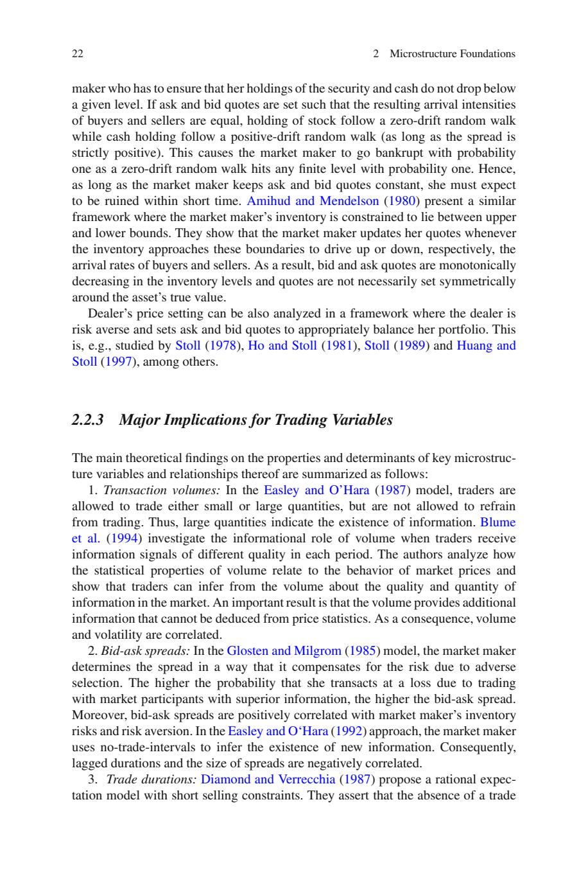
PDF page 38 / printed page 23#
2.2 A Review of Market Microstructure Theory 23
is associated with the occurrence of “bad” news. Then, the absence of a trade is
informative and is correlated with price volatility. In this framework, time matters
only because of the imposed short selling restrictions. In Easley and O‘Hara (1992),
however, informed traders enter the market whenever there are information signals
while non-informed traders might also refrain from trading. As a consequence, short
trade-to-trade durations indicate the existence of information. Admati and Pfleiderer
(1988) provide an explanation for temporal clustering of durations. In their setting,
liquidity traders prefer to minimize their transaction costs and to trade if other
traders are in the market. In equilibrium, it is optimal for informed traders to behave
similarly. As a consequence, trading is clustered, and trade durations are positively
autocorrelated.
2.2.4 Models for Limit Order Book Markets
A seminal paper to model limit order markets is Glosten (1994). In this model, all
market participants have access to an electronic screen. Posting limit orders is done
costlessly and the execution of a trade against the book occurs in a “discriminatory”
fashion. That is, each limit order transacts at its limit price. Investors are rational
and risk averse and maximize a quasi-concave utility function of their cash and
share position as well as personal preferences. The trading behavior of market order
traders depends on their marginal valuation functions and the prevailing terms of
trade, i.e., the list of bid and ask quotes available, which influence the changes in
investors’ cash and share positions. It is assumed that an investor chooses the trade
quantity such that her marginal valuation equals the marginal price corresponding
to the price paid for the last share in a transaction. There is informed trading if an
investor’s marginal valuation is associated with the future payoff. Then, incoming
market orders reveal information about the unknown “full information value” of
the traded security. Due to the anonymity of the electronic market, the underlying
marginal valuation implied by an arriving market order can be assessed by the
liquidity suppliers only through the observed limit price and the traded quantity
given the terms of trades offered by the book.
Glosten assumes that there is a large number of uninformed, risk-neutral and
profit-maximizing limit order submitters who set limit prices and quantities on the
basis of their “upper tail expectation”. The latter corresponds to the conditional
expectation of the asset’s full information liquidation value given that the next
arrival’s marginal valuation is greater than or equal to the traded quantity. In
the presence of private information, liquidity suppliers protect themselves against
adverse selection by setting the limit price at least equal to the upper tail expectation
given a market order trading at the corresponding price. It is shown that such
a strategy leads to a Nash equilibrium which is characterized by a zero-profit
condition for prices at which positive quantities are offered.
Glosten’s model is extended in several directions by Chakravarty and Holden
(1995), Handa and Schwartz (1996), Seppi (1997), Kavajecz (1999), Viswanathan{kind=link}
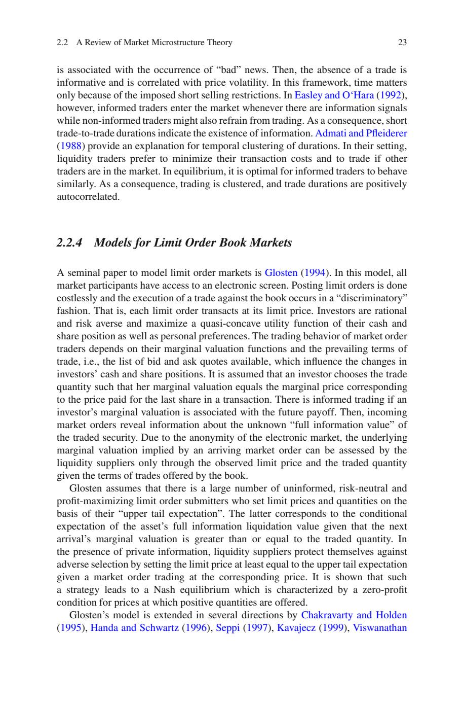
PDF page 39 / printed page 24#
24 2 Microstructure Foundations
and Wang (2002) and Parlour and Seppi (2003). However, while static equilibrium
models provide insights into the structure of the limit order book, they do not allow
to analyze (dynamic) interactions between the order flow and the state of the limit
order book. For this reason, Parlour (1998) proposes a dynamic game theoretical
equilibrium model where traders have different valuations for the asset and choose
between submitting a market order, a limit order or refraining from trading. Since
the expected future order flow is affected by their own order submission strategies,
the execution probabilities of limit orders are endogenous. This leads to systematic
patterns in traders’ order submission strategies even when there is no asymmetric
information in the market. The basic underlying mechanism is a “crowding out”
effect whereby market orders and limit orders on the individual market sides crowd
out one another when the ask or bid queue is changed. In particular, the probability
of the arrival of a buy (sell) trade after observing a buy (sell) trade is higher than
after observing a sell (buy) trade. This results from a buy transaction reducing the
depth on the ask side which in turn increases the execution probability for limit
sell orders. Hence, for a potential seller, the attractiveness of limit orders relative
to market orders rises inducing a crowding out of market sell orders in favor of
limit sell orders. Handa et al. 2003 extend this approach by introducing an adverse
selection component due to the presence of privately informed traders.
An alternative dynamic game theoretical equilibrium model has been proposed
by Foucault (1999) in order to study the cross-sectional behavior of the mix between
market orders and limit orders and the implied trading costs. He analyzes the
influence of the risks of being picked off and of non-execution on traders’ order
submission strategy and derives testable implications regarding the relationship
between the proportion of limit orders and market orders in the order flow, the fill
rate (i.e., the percentage of executed limit orders), the trading costs and the volatility
of the asset price. Handa et al. (2003) extend the approach by Foucault (1999) by
introducing private information in his model. While in Foucault’s model trading
occurs because of differences in traders’ valuation for the security, Handa et al.
introduce an adverse selection component due to the presence of privately informed
traders. As a result, the size of the spread is a function of the differences in valuation
among investors and of adverse selection. Further extensions of these frameworks
are, among others, Foucault et al. (2005) and Goettler et al. (2005, 2009). Recent
literature focuses on the theoretical analysis on automated trading and smart order
routing in electronic trading platforms. See, e.g., Foucault and Menkveld (2008),
Hendershott et al. (2011) or Biais et al. (2010), among others.
References
Admati A, Pfleiderer P (1988) A theory of intraday patterns: volume and price variability. Rev
Financ Stud 1:3–40
Amihud Y, Mendelson H (1980) Dealership markets: market making with inventory. J Finan Econ
8:31–53{kind=link}
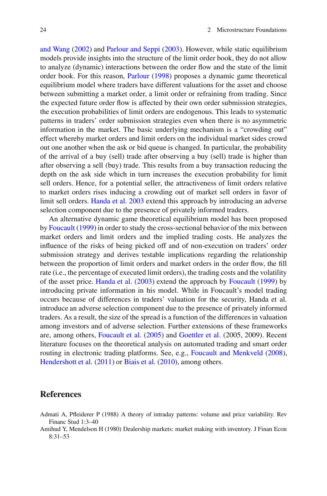
PDF page 40 / printed page 25#
References 25
Biais BR, Glosten L, Spatt C (2005) Market microstructure: a survey of microfoundations,
empirical results, and policy implications. J Finan Markets 8:217–264
Biais BR, Hombert J, Weill P-O (2010) Trading and liquidity with limited cognition. NBER
Working Paper No. 16628
Blume L, Easley D, O‘Hara M (1994) Market statistics and technical analysis. J Finance
49(1):153–181
Chakravarty S, Holden C (1995) An integrated model of market and limit orders. J Financial
Intermediation 4:213–241
Copeland TE, Galai D (1983) Information effects and the bid-ask spread. J Finance 38:1457–1469
Diamond DW, Verrecchia RE (1987) Constraints on short-selling and asset price adjustment to
private information. J Finan Econ 18:277–311
Easley D, Engle RF, O‘Hara M, Wu L (2008) Time-varying arrival rates of informed and
uninformed traders. J Financ Econom 6:171–207
Easley D, Hvidkjaer S, O‘Hara M (2002) Is information risk a determinant of asset returns?
J Finance 57:2185–2221
Easley D, Kiefer NM, O‘Hara M (1997) The information content of the trading process. J Empir
Financ 4:159–186
Easley D, O’Hara M (1987) Price, trade size, and information in securities markets. J Finan Econ
19:69–90
Easley D, O‘Hara M (1991) Order form and information in securities markets. J Finance
46:905–927
Easley D, O‘Hara M (1992) Time and process of security price adjustment. J Finance 47:577–605
Foster DF, Viswanathan S (1990) A theory of the interday variations in volume, variance, and
trading costs in securities markets. Rev Financ Stud 3:593–624
Foster DF, Viswanathan S (1996) Strategic trading when agents forecast the forecasts of others.
J Finance 51:1437–1478
Foucault T (1999) Order flow composition and trading costs in a dynamic limit order market.
J Finan Markets 2:99–134
Foucault T, Kadan O, Kandel E (2005) Limit order book as a market for liquidity. Rev Financ Stud
18:1171–1217
Foucault T, Menkveld AJ (2008) Competition for order flow and smart order routing systems.
J Finance 63:119–158
Garman M (1976) Market Microstructure. J Finan Econ 3:257–275
Glosten LR (1994) Is the electronic open limit order book inevitable. J Finance 49:1127–1161
Glosten LR, Milgrom PR (1985) Bid, ask and transaction prices in a specialist market with
heterogeneously informed traders. J Finan Econ 14:71–100
Goettler RL, Parlour CA, Rajan U (2005) Equilibrium in a dynamic limit order market. J Finance
60:2149–2192
Goettler RL, Parlour CA, Rajan U (2009) Informed traders and limit order markets. J Finan Econ
93:67–87
Handa P, Schwartz R (1996) Limit order trading. J Finance 51:1835–1861
Handa P, Schwartz R, Tiwari A (2003) Quote setting and price formation in an order driven market.
J Finan Markets 6:461–489
Harris L (2003) Trading & exchanges – market microstructure for practitioners. Oxford University
Press, Oxford
Hasbrouck J (2007) Empirical market microstructure. Oxford University Press, Oxford
Hautsch N, Huang R (2011) On the dark side of the market: identifying and analyzing hidden order
placements. Working Paper, Humboldt-Universität zu Berlin
Hendershott T, Jones CM, Menkveld AJ (2011) Does algorithmic trading improve liquidity?
J Finance 66:1–33
Ho T, Stoll H (1981) Optimal dealer pricing under transactions and return uncertainty. J Finan
Econ 9:47–73
Huang RD, Stoll HR (1997) The components of the bid/ask-spread: a general approach. Rev Financ
Stud 10:995–1034{kind=link}
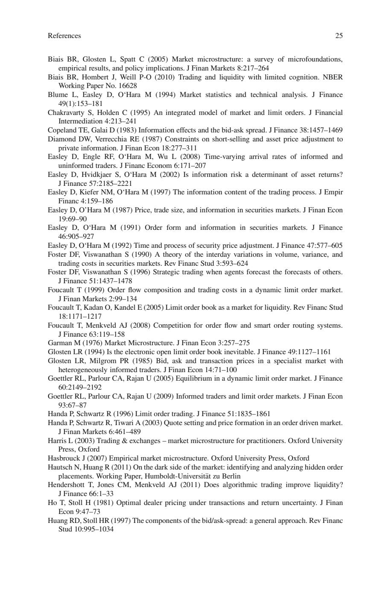
PDF page 41 / printed page 26#
26 2 Microstructure Foundations
Kavajecz K (1999) The specialist’s quoted depth and the limit order book. J Finance 52:747–771
Kyle AS (1985) Continuous auctions and insider trading. Econometrica 53(6):1315–1335
Madhavan A (2000) Market microstructure: a survey. J Finan Markets 3(3):205–258
O’Hara M (1995) Market microstructure. Basil Blackwell, Oxford
Parlour CA (1998) Price dynamics in limit order markets. Rev Financ Stud 11(4):789–816
Parlour CA, Seppi DJ (2003) Liquidity-based competition for order flow. Rev Financ Stud
16:301–343
Seppi DJ (1997) Liquidity provision with limit orders and strategic specialist. Rev Financ Stud
1(1):103–150
Stoll HR (1978) The supply of dealer services in securities markets. J Finance 33:1133–1151
Stoll HR (1989) Inferring the components of the bid-ask spread: theory and empirical tests.
J Finance 44(1):115–134
Viswanathan S, Wang JJD (2002) Market architecture: limit-order books versus dealership
markets. J Financ Markets 5:127–167{kind=link}
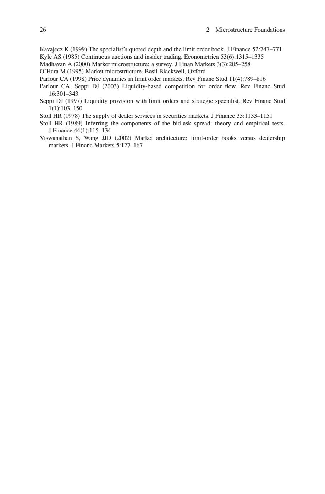